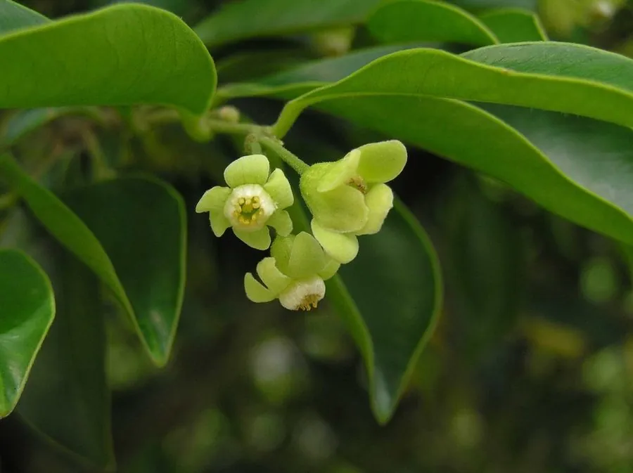

乔木 · 植物界
沉香 Aquilaria sinensis

瑞香科常绿乔木，树干受伤后分泌树脂、经年累月结香，形成名贵香料与药材“沉香”，中国华南有分布。
- 分类
- 门被子植物门纲木兰纲目锦葵目科瑞香科属沉香属
- 栖息环境
- 海拔 400 米以下的热带、亚热带山地雨林与沟谷，喜高温多湿、幼树耐阴
- 地理分布
- 中国广东、广西、海南、福建、云南；越南、印度尼西亚等东南亚国家
- 保护级别
- IUCN 易危（VU）；中国国家二级保护野生植物
物种志
沉香为瑞香科沉香属常绿乔木，高 10–20 米，树皮灰褐色、平滑，小枝细。叶片互生，革质，卵形至椭圆形，表面深绿有光泽。花小，黄绿色，组成腋生或顶生的伞形花序，花期 3–5 月；果实为木质蒴果，扁卵形，成熟时 2 瓣开裂，种子基部具尾状附属物，果期 7–9 月。
沉香原产中国广东、广西、海南、福建、云南等地，也分布于越南、印度尼西亚等东南亚国家，生于海拔 400 米以下的热带、亚热带山地林中。它喜高温多湿和半阴环境，幼树耐阴，适宜疏松肥沃的酸性土壤。沉香树本身并无明显香气，当树干受虫蛀、雷击或人为损伤后，木质部会分泌树脂并逐渐沉积，经数年乃至数十年形成深色芳香的“沉香”。沉香是名贵香料、药材与雕刻材料，中国将其列为国家二级保护野生植物，野生资源已十分稀少。
形态与习性
- 株高10–20 m，树皮灰褐色、平滑
- 花期3–5 月，花小、黄绿色
- 果期7–9 月，蒴果木质、2 瓣开裂
- 光照幼树耐阴，成年树喜光
- 水分喜湿润，忌积水
- 土壤疏松肥沃的酸性壤土
- 主要用途名贵香料与药材，雕刻工艺品，园林绿化
趣味知识
- 沉香树本身并不香，香气来自树干受伤后分泌并沉积的树脂。
- 结香需要数年乃至数十年，天然沉香的形成带有很大的偶然性。
- 中国海南、广东一带自古出产沉香，被称为“土沉香”或“白木香”。
- 由于野生资源稀少，沉香被列为国家二级保护野生植物。